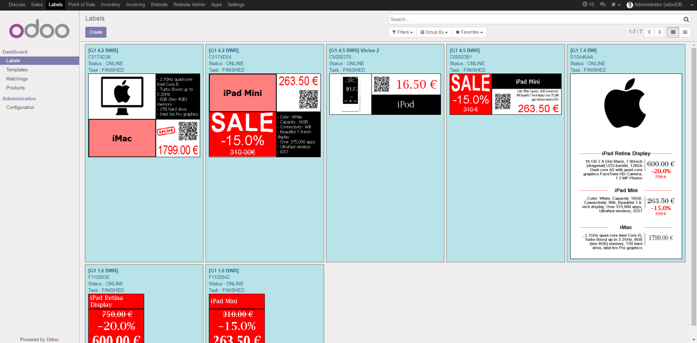
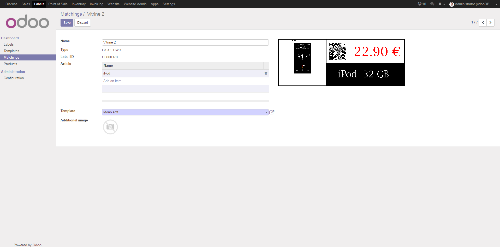
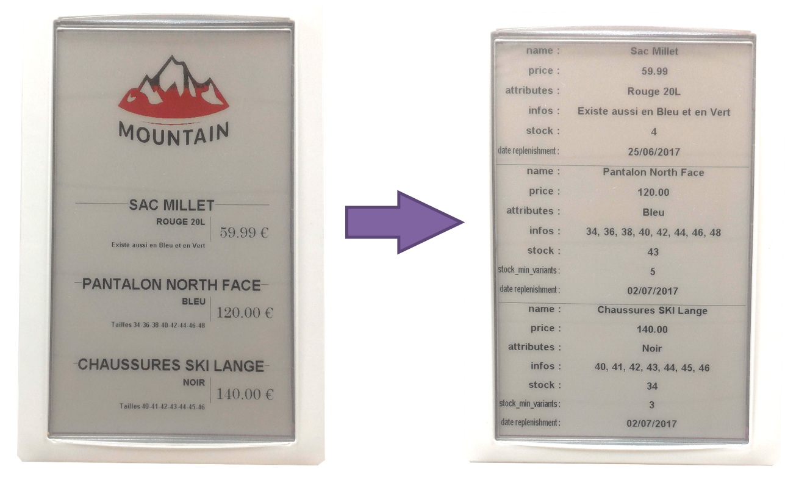
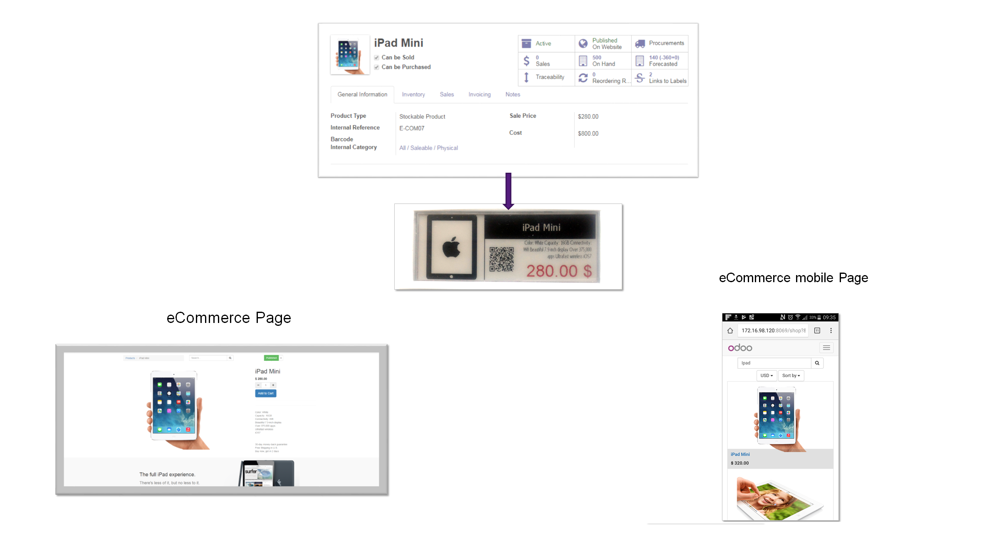

SES-imagotag's Label Manager
Overview,
This module will boost your retailer's performances through pricing automation, shopper connectivity, store efficiency and customer service
Pricing Automationn, Take the pain out of pricing

Tired of changing prices of your shelfs, electronic labels was designed for it. Stop loosing time changing paper labels. Link once a product to a label and never touch it again. Odoo will send changes on your products directly to the labels that will update automatically.

Store Efficiency, Manage with Precision
Once the store is closed, display any kind of useful informations (stocks, replenishment dates, ...) on your labels. This way, you can optimize inventory, reduce stock-outs and waste of perishable products and much more !

Shopper Connectivity
If you have a website that sells your goods, you can connect your entire store to it and make it a showcase
